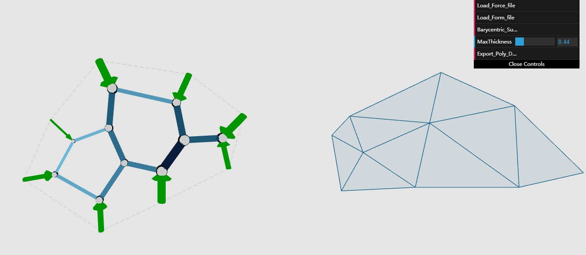

Welcome to My Workhouse
I am currently a master student in the Computer and Information Science Department of University of Pennsylvania., major in Computer Graphics and Game Technology(CGGT).
I am a big fan of computer and information science, especially the computer graphics and computer Vision. This is the space where I share my portfolio. I hope you can learn more about me from here.
About me
 |
Yi GuoComputer Graphics and Game Technology(CGGT) E-mail: guoyi1@seas.upenn.edu |
Projects
|  | 2D Polygon/3D Polyhedron Dual Structure
|
|
This project helps users to remove the vignette of the image.The code is implemented according to paper of "Single-Image Vignetting Correction",by Yuanjie Zheng,Stephen Lin,etc.Both c++ and Matlab source codes are provided. For the Matlab version, I revise some parts of the code offered by the author, Yuanjie Zheng. For the C++ version, it is implemented by Donghai Xie(my supervisor) and me. |
|
 |
|
 |
This is a group project implemented by Kaixiang Miao, Jiawei Wang and me.The program is implemented on the platform of QT creator. In this minecraft game, the main features include:Perlin Noise topography,Weather billboard,River system,texture, normal map, shadow map, Collision Detection, Fetch and place operation, Player GUI,etc. |
 |
This Mesh Editor tool is implemented with C++ and OpenGL on the platform of QT Creator. Main features include: scene graph tree structure, half edge mesh data structure, Catmull Clark subdivision, skinning and skeletion
|
 |
Fast 3D Reconstruction of Aerial Pictures Based on GPU Parallel Computing(still updating)
|
Contact me
If you have any questions about my projects, feel free to contact me. My e-mail address is guoyi1@seas.upenn.edu
Last Update: Aug 31st,2017